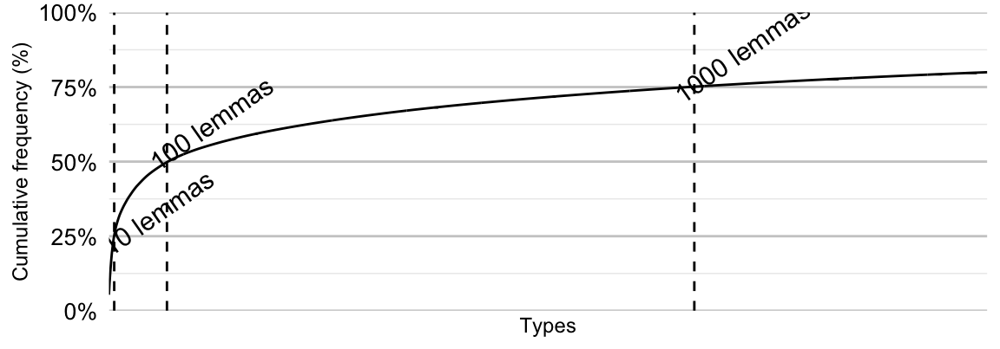
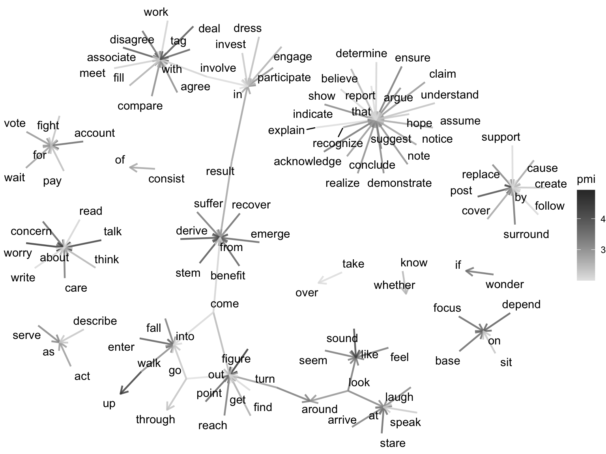
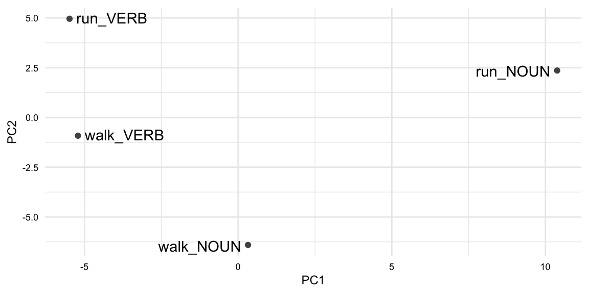

| variable | name | type | description |
|---|---|---|---|
| doc_id | Document ID | numeric | Unique identifier for each document |
| modality | Modality | categorical | The form in which the document is presented (written or spoken) |
| genre | Genre | categorical | The category or type of the document |
| term_num | Term Number | numeric | Index number term per document |
| term | Term | categorical | Individual word forms in the document |
| lemma | Lemma | categorical | Base or dictionary form of the term |
| pos | Part of Speech | categorical | Grammatical category of the term (modified PENN Treebank tagset) |
8 Explore
In this chapter, we examine a wide range of strategies for exploratory data analysis. The chapter outlines two main branches of exploratory data analysis: descriptive analysis which statistically and/or visually summarizes a dataset and unsupervised learning which is a machine learning approach that does not assume any particular relationship between variables in a dataset. Either through descriptive or unsupervised learning methods, exploratory data analysis employs quantitative methods to summarize, reduce, and sort complex datasets and statistically and visually interrogate a dataset in order to provide the researcher novel perspective to be qualitatively assessed.
8.1 Orientation
The goal of exploratory data analysis is to discover, describe, and posit new hypotheses. This analysis approach is best-suited for research questions where the literature is scarce, where the gap in knowledge is wide, or where new territories are being explored. The researcher may not know what to expect, but they are willing to let the data speak for itself. The researcher is open to new insights and new questions that may emerge from the analysis process.
While exploratory data analysis allows flexibility, it is essential to have a guiding research question that provides a focus for the analysis. This question will help to determine the variables of interest and the methods to be used. The research question will also help to determine the relevance of the results and the potential for the results to be used in further research.
The general workflow for exploratory data analysis is shown in Table 8.1.
| Step | Name | Description |
|---|---|---|
| 1 | Identify | Consider the research question and identify variables of potential interest to provide insight into our question. |
| 2 | Inspect | Check for missing data, outliers, etc. and check data distributions and transform if necessary. |
| 3 | Interrogate | Submit the selected variables to descriptive (frequency, keyword, co-occurrence analysis, etc.) or unsupervised learning (clustering, dimensionality reduction, vector spacing modeling, etc.) methods to provide quantitative measures to evaluate. |
| 4 | Interpret | Evaluate the results and determine if they are valid and meaningful to respond to the research question. |
| 5 | Iterate (Optional) | Repeat steps 1-4 as new questions emerge from your interpretation. |
8.2 Analysis
To frame our demonstration and discussion of exploratory data analysis, let’s tackle a task. The task will be to identify relevant materials for an English- language learner (ELL) textbook. This will involve multiple research questions and allow us to illustrate some very fundamental concepts that emerge across text analysis research in both descriptive and unsupervised learning approaches.
Since our task is geared towards English language use, we will want a representative data sample. For this, we will use the Manually Annotated Sub-Corpus of American English (MASC) of the American National Corpus (Ide, Baker, Fellbaum, Fillmore, & Passonneau, 2008).
The data dictionary for the dataset we will use as our point of departure is shown in Table 8.2.
First, I’ll read in and preview the dataset in Example 8.1.
Example 8.1
Rows: 591,036
Columns: 7
$ doc_id <dbl> 1, 1, 1, 1, 1, 1, 1, 1, 1, 1, 1, 1, 1, 1, 1, 1, 1, 1, 1, 1, 1…
$ modality <chr> "Written", "Written", "Written", "Written", "Written", "Writt…
$ genre <chr> "Letters", "Letters", "Letters", "Letters", "Letters", "Lette…
$ term_num <dbl> 0, 1, 2, 3, 4, 5, 6, 7, 8, 9, 10, 11, 12, 13, 14, 15, 16, 17,…
$ term <chr> "December", "1998", "Your", "contribution", "to", "Goodwill",…
$ lemma <chr> "december", "1998", "your", "contribution", "to", "goodwill",…
$ pos <chr> "NNP", "CD", "PRP$", "NN", "TO", "NNP", "MD", "VB", "JJR", "I…From the output in Example 8.1, we get some sense of the structure of the dataset. However, we also need to perform diagnostic and descriptive procedures. This will include checking for missing data and anomalies and assessing central tendency, dispersion, and/or distributions of the variables. This may include using {skimr}, {dplyr}, {stringr}, {ggplot2}, etc. to identify the most relevant variables for our task and to identify any potential issues with the dataset.
After a descriptive and diagnostic assessment of the dataset, not included here, I identified and addressed missing data and anomalies (including many non-words). I also recoded the doc_id variable to a character variable. The dataset now has 486,368 observations, a reduction from the original 591,036 observations. There are 392 documents, 2 modalities, 18 genres, almost 38k unique terms (which are words), almost 26k lemmas, and 34 distinct POS tags.
Descriptive analysis
Descriptive analysis includes common techniques such as frequency analysis to determine the most frequent words or phrases, dispersion analysis to see how terms are distributed throughout a document or corpus, keyword analysis to identify distinctive terms, and/or co-occurrence analysis to see what terms tend to appear together.
Using the MASC dataset, we will entertain questions such as:
- What are the most common terms a beginning ELL should learn?
- Are there term differences between spoken and written discourses that should be emphasized?
- What are some of the most common verb particle constructions?
Along the way, we will discuss frequency, dispersion, and co-occurrence measures. In addition, we will apply various descriptive analysis techniques and visualizations to explore the dataset and identify new questions and new variables of interest.
Frequency analysis
At its core, frequency analysis is a descriptive method that counts the number of times a linguistic unit occurs in a dataset. The results of frequency analysis can be used to describe the dataset and to identify terms that are linguistically distinctive or distinctive to a particular group or sub-group in the dataset.
Raw frequency
Let’s consider what the most common words in the MASC dataset are as a starting point to making inroads on our task by identifying relevant vocabulary for an ELL textbook.
In the masc_tbl data frame we have the linguistic unit term which corresponds to the word-level annotation of the MASC. The lemma corresponds to the base form of each term, for words with inflectional morphology, the lemma is the word sans the inflection (e.g. is/be, are/be). For other words, the term and the lemma will be the same (e.g. the/the, in/in). These two variables pose a choice point for us: do we consider words to be the actual forms or the base forms? There is an argument to be made for both. In this case, I will operationalize our linguistic unit as the lemma variable, as this will allow us to group words with distinct inflectional morphology together.
To perform a basic word frequency analysis, we can apply summarize() in combination with n() or the convenient count() function from {dplyr}. Our sorted lemma counts appear in Example 8.2.
Example 8.2
# A tibble: 25,923 × 2
lemma n
<chr> <int>
1 the 26137
2 be 19466
3 to 13548
4 and 12528
5 of 12005
6 a 10461
7 in 8374
8 i 7783
9 that 7082
10 you 5276
# ℹ 25,913 more rows
The output of this raw frequency tabulation in Example 8.2 is a data frame with two columns: lemma and n.
As we discussed in Section 3.1.3, the frequency of linguistic units in a corpus tends to be highly right-skewed distribution, approximating the Zipf distribution. If we calculate the cumulative frequency, a rolling sum of the frequency term by term, of the lemmas in the masc_tbl data frame, we can see that the top 10 types account for around 25% of the lemmas used in the entire corpus —by 100 types that increases to near 50% and 1,000 around 75%, as seen in Figure 8.1.

If we look at the types that appear within the first 50 most frequent, you can likely also appreciate another thing about language use. Let’s list the top 50 types in Table 8.3.
| the | have | at | your | all |
| be | it | from | an | there |
| to | for | he | say | me |
| and | on | but | what | would |
| of | do | by | so | about |
| a | with | will | his | know |
| in | we | my | if | get |
| i | as | or | ’s | make |
| that | this | n’t | can | out |
| you | not | they | go | up |
For the most part, the most frequent words are function words. Function words are a closed class of relatively few words that are used to express grammatical relationships between content words (e.g. determiners, prepositions, pronouns, and auxiliary verbs). Given the importance of these words, it then is no surprise that they comprise many of the most frequent words in a corpus.
Another key observation is that for those the content words (e.g. nouns, verbs, adjectives, adverbs) that do figure in the most frequent words, we find that they are quite generic semantically speaking. That is, they are words that are used in a wide range of contexts and take a wide range of meanings. Take for example the adjective ‘good’. It can be used to describe a wide range of nouns, such as ‘good food’, ‘good people’, ‘good times’, etc. A sometimes near-synonym of ‘good’, for example ‘good student’, is the word ‘studious’. Yet, ‘studious’ is not as frequent as ‘good’ as it is used to describe a narrower range of nouns, such as ‘studious student’, ‘studious scholar’, ‘studious researcher’, etc. In this way, ‘studious’ is more semantically specific than ‘good’.
So common across corpus samples, in some analyses these function words (and sometimes generic content words) are considered irrelevant and are filtered out. In our ELL materials task, however, we might exclude them for the simple fact that it will be a given that we will teach these words given their overall frequency. Let’s aim to focus solely on the content words in the dataset.
One approach to filtering out these words is to use a list of words to exclude, known as a stopwords lexicon. {tidytext} includes a data frame stop_words which includes stopword lexicons for English. We can select a lexicon from stop_words and use anti_join() to filter out the words that appear in the word variable from the lemma variable in the masc_tbl data frame.
Eliminating words in this fashion, however, may not always be the best approach. Available lists of stopwords vary in their contents and are determined by other researchers for other potential uses. We may instead opt to create our own stopword list that is tailored to the task, or we may opt to use a statistical approach based on their distribution in the dataset using frequency and/or dispersion measures.
For our case, however, we have another available strategy. Since our task is to identify relevant vocabulary, beyond the fundamental function words in English, we can use the POS tags to reduce our dataset to just the content words, that is nouns, verbs, adjectives, and adverbs. Using the Penn tagset as reference, we can create a vector with the POS tags we want to retain and then use the filter() function on the datasets. I will assign this new data frame to masc_content_tbl to keep it separate from our main data frame masc_tbl, seen in Example 8.3.
Example 8.3
# Penn Tagset for content words
# Nouns: NN, NNS,
# Verbs: VB, VBD, VBG, VBN, VBP, VBZ
# Adjectives: JJ, JJR, JJS
# Adverbs: RB, RBR, RBS
content_pos <- c("NN", "NNS", "VB", "VBD", "VBG", "VBN", "VBP", "VBZ", "JJ", "JJR", "JJS", "RB", "RBR", "RBS")
# Select content words
masc_content_tbl <-
masc_tbl |>
filter(pos %in% content_pos)
Let’s now preview the top 50 lemmas in the masc_content_tbl data frame to see how the most frequent words have changed in Table 8.4.
| be | think | work | also | t |
| have | more | year | need | first |
| do | just | come | way | help |
| not | time | use | back | day |
| n’t | so | well | here | many |
| say | other | look | new | man |
| go | see | then | find | ask |
| know | people | right | give | very |
| get | take | only | thing | much |
| make | now | want | tell | even |
The resulting list in Table 8.4 paints a different picture of the most frequent words in the dataset. The most frequent words are now content words, and included in most frequent words are more semantically specific words. We now have reduced the number of observations by 50% focusing on the content words. We are getting closer to identifying the vocabulary that we want to include in our ELL materials, but we will need some more tools to help us identify the most relevant vocabulary.
Dispersion
Dispersion is a measure of how evenly distributed a linguistic unit is across a dataset. This is a key concept in text analysis, as important as frequency. It is important to recognize that frequency and dispersion are measures of different characteristics. We can have two words that occur with the same frequency, but one word may be more evenly distributed across a dataset than the other. Depending on the researcher’s aims, this may be an important distinction to make. For our task, it is likely the case that we want to capture words that are well-dispersed across the dataset, as words that have a high frequency and a low dispersion tend to be connected to a particular context, whether that be a particular genre, a particular speaker, a particular topic, etc. In other research, the aim may be the reverse; to identify words that are highly frequent and highly concentrated in a particular context to identify words that are distinctive to that context.
There are a variety of measures that can be used to estimate the distribution of types across a corpus. Let’s focus on three measures: document frequency (\(df\)), inverse document frequency (\(idf\)), and Gries’ Deviation of Proportions (\(dp\)).
The most basic measure is document frequency (\(df\)). This is the number of documents in which a type appears at least once. For example, if a type appears in 10 documents, then the document frequency is 10. This is a very basic measure, but it is a decent starting point.
A nuanced version of document frequency is inverse document frequency (\(idf\)). This measure takes the total number of documents and divides it by the document frequency. This results in a measure that is inversely proportional to the document frequency. That is, the higher the document frequency, the lower the inverse document frequency. This measure is often log-transformed to spread out the values.
One thing to consider about \(df\) and \(idf\) is that neither takes into account the length of the documents in which the type appears nor the spread of each type within each document. To take these factors into account, we can use Gries’ deviation of proportions (\(dp\)) measure (Gries, 2023, pp. 87–88). The \(dp\) measure considers the proportion of a type’s frequency in each document relative to its total frequency. This produces a measure that is more sensitive to the distribution of types within and across documents in a corpus.
Let’s consider how these measures differ with three scenarios:
- Scenario A: A type with a token frequency of 100 appears in each of the 10 documents in a corpus. Each document is 100 words long, and the type appears 10 times in each document.
- Scenario B: The same type with a token frequency of 100 appears in each of the 10 documents, each 100 words long. However, in this scenario, the type appears once in 9 documents and 91 times in 1 document.
- Scenario C: Nine of the documents constitute 99% of the corpus. The type appears once in each of these 9 documents and 91 times in the 10th document.
In these scenarios, Scenario A is the most dispersed, Scenario B is less dispersed, and Scenario C is the least dispersed. Despite these differences, the type’s document frequency (\(df\)) and inverse document frequency (\(idf\)) scores remain the same across all three scenarios. However, the dispersion (\(dp\)) score will accurately reflect the increasing concentration of the type’s dispersion from Scenario A to Scenario B to Scenario C.
So for our task we will use \(dp\) as our measure of dispersion. {qtkit} includes the calc_type_metrics() function which calculates, among other metrics, the dispersion metrics \(df\), \(idf\), and/or \(dp\). Let’s select dp and assign the result to masc_lemma_disp, as seen in Example 8.4.
Example 8.4
# Load package
library(qtkit)
# Calculate deviance of proportions (DP)
masc_lemma_disp <-
masc_content_tbl |>
calc_type_metrics(
type = lemma,
documents = doc_id,
dispersion = "dp"
) |>
arrange(dp)
# Preview
masc_lemma_disp |>
slice_head(n = 10)# A tibble: 10 × 3
type n dp
<chr> <dbl> <dbl>
1 be 19231 0.123
2 have 5136 0.189
3 not 2279 0.240
4 make 1149 0.266
5 other 882 0.269
6 more 1005 0.276
7 take 769 0.286
8 only 627 0.286
9 time 931 0.314
10 see 865 0.327
We would like to identify lemmas that are frequent and well-dispersed. But an important question arises, what is the threshold for frequency and dispersion that we should use to identify the lemmas that we want to include in our ELL materials?
There are statistical approaches to identifying natural breakpoints but a visual inspection is often good enough for practical purposes. Let’s create a density plot to see if there is a natural break in the distribution of our dispersion measure, as seen in Figure 8.2.
Example 8.5

What we are looking for is a distinctive bend in the distribution of dispersion measures. In Figure 8.2, we can see one roughly between \(0.87\) and \(0.97\). The inflection point appears to be near \(0.95\). This bend is called an elbow, and using this bend to make informed decisions about thresholds is called the elbow method.
In Example 8.6, I filter out lemmas that have a dispersion measure less than \(0.95\).
Example 8.6
Then in Tables 8.5 and 8.6, I preview the top and bottom 25 lemmas in the dataset.
| be | say | think | other | work |
| have | go | more | see | year |
| do | know | just | people | come |
| not | get | time | take | use |
| n’t | make | so | now | well |
| ramification | contradiction | deckhand | injustice | imaginative |
| trickled | flatly | graveyard | intimately | pastime |
| conceivably | mindset | rooftop | preoccupation | rickety |
| charade | mischaracterized | wharf | specifics | scroll |
| traipse | shameful | commend | checkered | uphill |
We now have a solid candidate list of common vocabulary that is spread well across the corpus.
Relative frequency
Gauging frequency and dispersion across the entire corpus sets the foundation for any frequency analysis, but it is often the case that we want to compare the frequency and/or dispersion of linguistic units across corpora or sub-corpora.
In the case of the MASC dataset, for example, we may want to compare metrics across the two modalities or the various genres. Simply comparing raw frequency counts across these sub-corpora is not a good approach, and can be misleading, as the sub-corpora will likely vary in size. For example, if one sub-corpus is twice as large as another sub-corpus, then, all else being equal, the frequency counts will be twice as large in the larger sub-corpus. This is why we use relative frequency measures, which are normalized by the size of the sub-corpus.
To normalize the frequency of linguistic units across sub-corpora, we can use the relative frequency (\(rf\)) measure. This is the frequency of a linguistic unit divided by the total number of linguistic units in the sub-corpus. This bakes in the size of the sub-corpus into the measure. The notion of relative frequency is key to all research working with text, as it is the basis for the statistical approach to text analysis where comparisons are made.
There are some field-specific terms that are used to refer to relative frequency measures. For example, in NLP literature, the relative frequency measure is often referred to as the term frequency (\(tf\)). In corpus linguistics, the relative frequency measure is often modified slightly to include a constant (e.g. \(rf * 100\)) which is known as the observed relative frequency (\(orf\)). Although the observed relative frequency per number of tokens is not strictly necessary, it is often used to make the values more interpretable as we can now talk about an observed relative frequency of 1.5 as a linguistic unit that occurs 1.5 times per 100 linguistic units.
Let’s consider how we might compare the frequency and dispersion of lemmas across the two modalities in the MASC dataset, spoken and written. To make this a bit more interesting and more relevant, let’s add the pos variable to our analysis. The intent, then, will be to identify lemmas tagged with particular parts of speech that are particularly indicative of each modality.
We can do this by collapsing the lemma and pos variables into a single variable, lemma_pos, with the str_c() function, as seen in Example 8.7.
Example 8.7
# Collapse lemma and pos into type
masc_content_tbl <-
masc_content_tbl |>
mutate(lemma_pos = str_c(lemma, pos, sep = "_"))
# Preview
masc_content_tbl |>
slice_head(n = 5)# A tibble: 5 × 8
doc_id modality genre term_num term lemma pos lemma_pos
<chr> <chr> <chr> <dbl> <chr> <chr> <chr> <chr>
1 1 Written Letters 3 contribution contribution NN contribution…
2 1 Written Letters 7 mean mean VB mean_VB
3 1 Written Letters 8 more more JJR more_JJR
4 1 Written Letters 12 know know VB know_VB
5 1 Written Letters 15 help help VB help_VB
Now this will increase the number of lemma types in the dataset as we are now considering lemmas where the same lemma form is tagged with different parts of speech.
Getting back to calculating the frequency and dispersion of lemmas in each modality, we can use the calc_type_metrics() function with lemma_pos as our type argument. We will, however, need to apply this function to each sub-corpus independently and then concatenate the two data frames. This function returns a (raw) frequency (\(n\)) measure by default, but we can specify the frequency argument to rf to calculate the relative frequency of the linguistic units as in Example 8.8.
Example 8.8
# Calculate relative frequency
# Spoken
masc_spoken_metrics <-
masc_content_tbl |>
filter(modality == "Spoken") |>
calc_type_metrics(
type = lemma_pos,
documents = doc_id,
frequency = "rf",
dispersion = "dp"
) |>
mutate(modality = "Spoken") |>
arrange(desc(n))
# Written
masc_written_metrics <-
masc_content_tbl |>
filter(modality == "Written") |>
calc_type_metrics(
type = lemma_pos,
documents = doc_id,
frequency = "rf",
dispersion = "dp"
) |>
mutate(modality = "Written") |>
arrange(desc(n))
# Concatenate metrics
masc_metrics <-
bind_rows(masc_spoken_metrics, masc_written_metrics)
# Preview
masc_metrics |>
slice_head(n = 5)# A tibble: 5 × 5
type n rf dp modality
<chr> <dbl> <dbl> <dbl> <chr>
1 be_VBZ 2612 0.0489 0.0843 Spoken
2 be_VBP 1282 0.0240 0.111 Spoken
3 be_VBD 1020 0.0191 0.300 Spoken
4 n't_RB 829 0.0155 0.139 Spoken
5 have_VBP 766 0.0143 0.152 Spoken
With the rf measure, we are now in a position to compare ‘apples to apples’, as you might say. We can now compare the relative frequency of lemmas across the two modalities. Let’s preview the top 5 lemmas in each modality, as seen in Example 8.9.
Example 8.9
# Preview top 10 lemmas in each modality
masc_metrics |>
group_by(modality) |>
slice_max(n = 10, order_by = rf)# A tibble: 20 × 5
# Groups: modality [2]
type n rf dp modality
<chr> <dbl> <dbl> <dbl> <chr>
1 be_VBZ 2612 0.0489 0.0843 Spoken
2 be_VBP 1282 0.0240 0.111 Spoken
3 be_VBD 1020 0.0191 0.300 Spoken
4 n't_RB 829 0.0155 0.139 Spoken
5 have_VBP 766 0.0143 0.152 Spoken
6 do_VBP 728 0.0136 0.180 Spoken
7 be_VB 655 0.0123 0.147 Spoken
8 not_RB 638 0.0119 0.137 Spoken
9 just_RB 404 0.00757 0.267 Spoken
10 so_RB 387 0.00725 0.357 Spoken
11 be_VBZ 4745 0.0249 0.230 Written
12 be_VBD 3317 0.0174 0.366 Written
13 be_VBP 2617 0.0137 0.237 Written
14 be_VB 1863 0.00976 0.218 Written
15 not_RB 1640 0.00859 0.259 Written
16 have_VBP 1227 0.00643 0.291 Written
17 n't_RB 905 0.00474 0.540 Written
18 have_VBD 859 0.00450 0.446 Written
19 have_VBZ 777 0.00407 0.335 Written
20 say_VBD 710 0.00372 0.609 Written
We can appreciate, now, that there are similarities and a few differences between the most frequent lemmas for each modality. First, there are similar lemmas in written and spoken modalities, such as ‘be’, ‘have’, and ‘not’. Second, the top 10 include verbs and adverbs. Now we are looking at the most frequent types, so it is not surprising that we see more in common than not. However, looking close we can see that contracted forms are more frequent in the spoken modality, such as ‘isn’t’, ‘don’t’, and ‘can’t’ and that ordering of the verb tenses differs to some degree. Whether these are important distinctions for our task is something we will need to consider.
We can further cull our results by filtering out lemmas that are not well-dispersed across the sub-corpora. Although it may be tempting to use the threshold we used earlier, we should consider that the sizes of the sub-corpora are different and the distribution of the dispersion measure may be different. With this in mind, we need to visualize the distribution of the dispersion measure for each modality and apply the elbow method to identify a threshold for each modality.
After assessing the density plots for the dispersion of each modality via the elbow method, we update our thresholds. We maintain the \(0.95\) threshold for the written sub-corpus and use a \(0.79\) threshold for the spoken sub-corpus. I apply these filters as seen in Example 8.10.
Example 8.10
Filtering the less-dispersed types reduces the dataset from 33,428 to 7,459 observations. This will provide us with a more succinct list of common and well-dispersed lemmas that are used in each modality.
As much as the frequency and dispersion measures can provide us with a starting point, it does not provide an understanding of what types are more indicative of a particular sub-corpus, modality sub-corpora in our case. We can do this by calculating the log odds ratio of each lemma in each modality.
The log odds ratio is a measure that quantifies the difference between the frequencies of a type in two corpora or sub-corpora. In spirit and in name, it compares the odds of a type occurring in one corpus versus the other. The values range from negative to positive infinity, with negative values indicating that the type is more frequent in the first corpus and positive values indicating that the lemma is more frequent in the second corpus. The magnitude of the value indicates the strength of the association.
{tidylo} provides a convenient function bind_log_odds() to calculate the log odds ratio, and a weighed variant, for each type in each sub-corpus. The weighted log odds ratio measure provides a more robust and interpretable measure for comparing term frequencies across corpora, especially when term frequencies are low or when corpora are of different sizes. The weighting (or standardization) also makes it easier to identify terms that are particularly distinctive or characteristic of one corpus over another.
Let’s calculate the weighted log odds ratio for each lemma in each modality and preview the top 10 lemmas in each modality, as seen in Example 8.11.
Example 8.11
# Load package
library(tidylo)
# Calculate log odds ratio
masc_metrics_thr <-
masc_metrics_thr |>
bind_log_odds(
set = modality,
feature = type,
n = n
)
# Preview top 10 lemmas in each modality
masc_metrics_thr |>
group_by(modality) |>
slice_max(n = 10, order_by = log_odds_weighted)# A tibble: 20 × 6
# Groups: modality [2]
type n rf dp modality log_odds_weighted
<chr> <dbl> <dbl> <dbl> <chr> <dbl>
1 be_VBZ 2612 0.0489 0.0843 Spoken 20.7
2 n't_RB 829 0.0155 0.139 Spoken 13.6
3 be_VBP 1282 0.0240 0.111 Spoken 13.4
4 do_VBP 728 0.0136 0.180 Spoken 13.2
5 have_VBP 766 0.0143 0.152 Spoken 11.4
6 think_VBP 350 0.00655 0.259 Spoken 10.2
7 be_VBD 1020 0.0191 0.300 Spoken 9.18
8 well_RB 334 0.00626 0.283 Spoken 8.90
9 know_VBP 282 0.00528 0.260 Spoken 8.78
10 just_RB 404 0.00757 0.267 Spoken 8.53
11 t_NN 475 0.00249 0.778 Written 9.62
12 figure_NN 140 0.000733 0.868 Written 5.21
13 financial_JJ 138 0.000723 0.880 Written 5.18
14 city_NN 137 0.000718 0.766 Written 5.16
15 email_NN 133 0.000697 0.866 Written 5.08
16 eye_NNS 129 0.000676 0.731 Written 5.00
17 style_NN 108 0.000566 0.829 Written 4.58
18 mail_NN 106 0.000555 0.876 Written 4.54
19 channel_NN 103 0.000540 0.919 Written 4.47
20 text_NN 103 0.000540 0.845 Written 4.47
Let’s imagine we would like to extract the most indicative verbs for each modality using the weighted log odds as our measure. We can do this with a little regex magic. Let’s use the str_subset() function to filter for lemmas that contain _V and then use slice_max() to extract the top 10 most indicative verb lemmas, as seen in Example 8.12.
Example 8.12
# Preview (ordered by log_odds_weighted)
masc_metrics_thr |>
group_by(modality) |>
filter(str_detect(type, "_V")) |>
slice_max(n = 10, order_by = log_odds_weighted) |>
select(-n)# A tibble: 20 × 5
# Groups: modality [2]
type rf dp modality log_odds_weighted
<chr> <dbl> <dbl> <chr> <dbl>
1 be_VBZ 0.0489 0.0843 Spoken 20.7
2 be_VBP 0.0240 0.111 Spoken 13.4
3 do_VBP 0.0136 0.180 Spoken 13.2
4 have_VBP 0.0143 0.152 Spoken 11.4
5 think_VBP 0.00655 0.259 Spoken 10.2
6 be_VBD 0.0191 0.300 Spoken 9.18
7 know_VBP 0.00528 0.260 Spoken 8.78
8 go_VBG 0.00534 0.207 Spoken 8.29
9 do_VBD 0.00603 0.321 Spoken 8.03
10 be_VB 0.0123 0.147 Spoken 7.92
11 post_VBN 0.000372 0.928 Written 3.71
12 don_VB 0.000361 0.839 Written 3.66
13 doe_VBZ 0.000351 0.870 Written 3.61
14 walk_VBD 0.000320 0.790 Written 3.44
15 associate_VBN 0.000304 0.777 Written 3.35
16 reply_VBD 0.000293 0.837 Written 3.30
17 develop_VBG 0.000288 0.812 Written 3.27
18 require_VBN 0.000272 0.793 Written 3.18
19 fall_VBD 0.000267 0.757 Written 3.15
20 meet_VB 0.000241 0.729 Written 2.99
Note that the log odds are larger for the spoken modality than the written modality. This indicates that theses types are more strongly indicative of the spoken modality than the types in the written modality are indicative of the written modality. This is not surprising, as the written modality is typically more diverse in terms of lexical usage than the spoken modality, where the terms tend to be repeated more often, including verbs.
Co-occurrence analysis
Moving forward on our task, we have a general idea of the vocabulary that we want to include in our ELL materials and can identify lemma types that are particularly indicative of each modality. Another useful approach to complement our analysis is to identify words that co-occur with our target lemmas (verbs). In English, it is common for verbs to appear with a preposition or adverb, such as ‘give up’, ‘look after’. These ‘phrasal verbs’ form a semantic unit that is distinct from the verb alone.
In a case such as this, we are aiming to do a co-occurrence analysis. Co-occurrence analysis is a set of methods that are used to identify words that appear in close proximity to a target type.
An exploratory, primarily qualitative, approach is to display the co-occurrence of words in a Keyword in Context (KWIC) search. KWIC produces a table that displays the target word in the center of the table and the words that appear before and after the target word within some defined window context. This is a useful approach for spot identifying co-occurring patterns which include the target word or phrase. However, it can be a time-consuming process to manually inspect these results and is likely not a feasible approach for large datasets.
A straightforward quantitative way to explore co-occurrence is to set the unit of observation to an ngram of word terms. Then, the frequency and dispersion metrics can be calculated for each ngram. Yet, there is an issue with this approach for our purposes. The frequency and dispersion of ngrams does not necessarily relate to whether the two words form a semantic unit. For example, in any given corpus there will be highly frequent pairings of function words, such as ‘of the’, ‘in the’, ‘to the’, etc. These combinations our bound to occur frequently in large part because the high frequency of each individual word. However, these combinations do not have the same semantic cohesion as other, likely lower-frequency, ngrams such as ‘look after’, ‘give up’, etc.
To better address our question, we can use a statistical measure to estimate collocational strength between two words. A collocation is a sequence of words that co-occur more often than would be expected by chance. A common measure of collocation is the pointwise mutual information (PMI) measure. PMI scores reflect the likelihood of two words occurring together given their individual frequencies and compares this to the actual co-occurrence frequency. A high PMI indicates a strong semantic association between the words.
One consideration that we need to take into account for our goal to identify verb particle constructions, is how we ultimately want to group our lemma_pos values. This is particularly important given the fact that our pos tags for verbs include information about the verb’s tense and person attributes. This means that a verb in a verb particle bigram, such as ‘look after’, will be represented by multiple lemma_pos values, such as look_VB, look_VBP, look_VBD, and look_VBG. We want to group the verb particle bigrams by a single verb value, so we need to reclassify the pos values for verbs. We can do this with the case_when() function from {dplyr}.
In Example 8.13, I recode the pos values for verbs to V and then join the lemma and pos columns into a single string.
Example 8.13
Let’s calculate the PMI for all the bigrams in the MASC dataset. We can use the calc_assoc_metrics() function from {qtkit}. We need to specify the association argument to pmi and the type argument to bigrams, as seen in Example 8.14.
Example 8.14
masc_lemma_pos_assoc <-
masc_lemma_pos_tbl |>
calc_assoc_metrics(
doc_index = doc_id,
token_index = term_num,
type = lemma_pos,
association = "pmi"
)
# Preview
masc_lemma_pos_assoc |>
arrange(desc(pmi)) |>
slice_head(n = 10)# A tibble: 10 × 4
x y n pmi
<chr> <chr> <dbl> <dbl>
1 #Christian_NN bigot_NN 1 12.4
2 #FAIL_NN phenomenally_RB 1 12.4
3 #NASCAR_NN #indycar_NN 1 12.4
4 #PALM_NN merchan_NN 1 12.4
5 #Twitter_NN #growth_NN 1 12.4
6 #college_NN #jobs_NN 1 12.4
7 #education_NN #teaching_NN 1 12.4
8 #faculty_NN #cites_NN 1 12.4
9 #fb_NN siebel_NNP 1 12.4
10 #glitchmyass_NN reps_NNP 1 12.4
One caveat to using the PMI measure is that it is sensitive to the frequency of the words. If the words in a bigram pair are infrequent, and especially if they only occur once, then the PMI measure will be unduly inflated. To mitigate this issue, we can apply a frequency threshold to the bigrams before calculating the PMI measure. Let’s filter out bigrams that occur less than 10 times and have a positive PMI, and while we are at it, let’s also filter x and y for the appropriate forms we are targeting, either _V and _IN, as seen Example 8.15.
Example 8.15
# Filter for target bigrams
masc_verb_part_assoc <-
masc_lemma_pos_assoc |>
filter(n >= 10 & pmi > 0) |>
filter(str_detect(x, "_V")) |>
filter(str_detect(y, "_IN"))
# Preview
masc_verb_part_assoc |>
slice_max(order_by = pmi, n = 10)# A tibble: 10 × 4
x y n pmi
<chr> <chr> <dbl> <dbl>
1 figure_V out_IN 17 4.93
2 worry_V about_IN 27 4.78
3 walk_V up_IN 10 4.62
4 talk_V about_IN 114 4.57
5 sound_V like_IN 15 4.42
6 post_V by_IN 57 4.29
7 derive_V from_IN 17 4.27
8 stem_V from_IN 10 4.13
9 deal_V with_IN 53 4.12
10 associate_V with_IN 48 4.05
We have a working method for identify verb particle constructions. We can clean up the results a bit by removing the POS tags from the x and y variables, up our minimum PMI value, and create a network plot to visualize the results. A network plot is a type of graph that shows relationships between entities. In this case, the entities are verbs and particles, and the relationships are the PMI values between them. The connections between are represented by edges, and the thickness of the edges is proportional to the PMI value.

From Figure 8.3, and from the underlying data, we can explore verb particle constructions. We could go further and apply our co-occurrence methods to each modality separately, if we wanted to identify verb particle constructions that are distinctive to each modality. We could also apply our co-occurrence methods to other parts of speech, such as adjectives and nouns, to identify collocations of these parts of speech. There is much more to explore with co-occurrence analysis, but this should give you a good idea of the types of questions that can be addressed.
Unsupervised learning
Aligned in purpose with descriptive approaches, unsupervised learning approaches to exploratory data analysis are used to identify patterns in the data from an algorithmic perspective. Common methods in text analysis include principal component analysis, clustering, and vector space modeling.
We will continue to use the MASC dataset as we develop materials for our ELL textbook to illustrate unsupervised learning methods. In the process, we will explore the following questions:
- Can we identify and group documents based on linguistic features or co-occurrence patterns of the data itself?
- Do the groups of documents relate to categories in the dataset?
- Can we estimate the semantics of words based on their co-occurrence patterns?
Through these questions we will build on our knowledge of frequency, dispersion, and co-occurrence analysis and introduce concepts and methods associated with machine learning.
Clustering
Clustering is an unsupervised learning technique that can be used to group similar items in the text data, helping to organize the data into distinct categories and discover relationships between different elements in the text. The main steps in the procedure includes identifying the relevant linguistic features to use for clustering, representing the features in a way that can be used for clustering, applying a clustering algorithm to the data, and then interpreting the results.
In our ELL textbook task, we may very well want to explore the similarities and/or differences between the documents based on the distribution of linguistic features. This provides us a view to evaluate to what extent the variables in the dataset, say genre for this demonstration, map to the distribution of linguistic features. Based on this evaluation, we may want to consider re-categorizing the documents, collapsing categories, or even adding new categories.
Instead of relying entirely on the variables’ values in the MASC dataset, we can let the data itself say something about how documents may or may not be related. Yet, a pivotal question is what linguistic features we will use, otherwise known as feature selection. We could use terms or lemmas, but we may want to consider other features, such as parts of speech or some co-occurrence pattern. We are not locked into using one criterion, and we can perform clustering multiple times with different features, but we should consider the implications of our feature selection for our interpretation of the results.
Imagine that among the various features that we are interested in associating documents, we consider lemma use and POS use. However, we need to operationalize what we mean by ‘use’. In machine learning, this process is known as feature engineering. We likely want to use some measure of frequency. Since we are comparing documents, a relative frequency measure will be most useful. Another consideration it means to use lemmas or POS tags as our features. Each represents a different linguistic of the documents. Lemmas represent the lexical diversity of the documents while POS tags approximate the grammatical diversity of the documents (Petrenz & Webber, 2011).
Let’s assume that our interest is to gauge the grammatical diversity of the documents, so we will go with POS tags. With this approach, we aim to distinguish between documents in a way that may allow us to consider whether genre-document categories are meaningful, along grammatical lines.
The next question to address in any analysis is how to represent the features. In machine learning, the most common way to represent relationships is in a matrix. In our case, we want to create a matrix with the documents in the rows and the features in the columns. The values in the matrix will be the operationalization of grammatical diversity in each document. This configuration is known as a document-term matrix (DTM).
To recast a data frame into a DTM, we can use the cast_dtm() function from {tidytext}. This function takes a data frame with a document identifier, a feature identifier, and a value for each observation and casts it into a matrix. Operations such as normalization are easily and efficiently performed in R on matrices, so initially we can cast a frequency table of POS tags into a matrix and then normalize the matrix by documents.
Let’s see how this works with the MASC dataset in Example 8.16.
Example 8.16
# Load package
library(tidytext)
# Create a document-term matrix of POS tags
masc_pos_dtm <-
masc_tbl |>
count(doc_id, pos) |>
cast_dtm(doc_id, pos, n) |>
as.matrix()
# Inspect
dim(masc_pos_dtm)
# Preview
masc_pos_dtm[1:5, 1:5][1] 392 32
Terms
Docs CC DT EX IN JJ
1 14 35 1 44 27
10 11 38 0 39 18
100 0 2 0 2 3
101 3 16 0 23 7
102 20 29 0 34 20
The matrix masc_pos_dtm has 392 documents and 32 POS tags. The values in the matrix are the frequency of each POS tag in each document. Note to preview a subset of the contents of a matrix, such as in Example 8.16, we use bracket syntax [] instead of the head() function.
We can now normalize the matrix by documents. We can do this by dividing each feature count by the total count in each document. This is a row-wise transformation, so we can use the rowSums() function from base R to calculate the total count in each document. Then each count divided by its row’s total count, as seen in Example 8.17.
Example 8.17
There are two concerns to address before we can proceed with clustering. First, clustering algorithm performance tends to degrade with the number of features. Second, clustering algorithms perform better with more informative features. That is to say, features that are more distinct across the documents provide better information for deriving useful clusters.
We can address both of these concerns by reducing the number of features and increasing the informativeness of the features. To accomplish this is to use dimensionality reduction. Dimensionality reduction is a set of methods that are used to reduce the number of features in a dataset while retaining as much information as possible. The most common method for dimensionality reduction is principal component analysis (PCA). PCA is a method that transforms a set of correlated variables into a set of uncorrelated variables, known as principal components. The principal components are ordered by the amount of variance that they explain in the data. The first principal component explains the most variance, the second principal component explains the second most variance, and so on.
We can apply PCA to the matrix and assess how well it accounts for the variation in the data and how the variation is distributed across components. The prcomp() function from base R can be used to perform PCA.
Let’s apply PCA to the matrix, as seen in Example 8.18.
Example 8.18
We can visualize the amount of variance explained by each principal component with a scree plot. A scree plot is a bar plot ordered by the amount of variance explained by each principal component. The fviz_eig() function from {factoextra} implements a scree plot on a PCA object. We can set the number of components to visualize with ncp =, as seen in Example 8.19.
Example 8.19
# Load package
library(factoextra)
# Scree plot: POS relative frequency
fviz_eig(masc_pos_pca, ncp = 10)

From the scree plot for the matrix in Figure 8.4, we can see that the first component shows the most variance explained, around just over 30%, and then drops for subsequent drops as the number of dimensions increase. Visually we will apply the elbow method to identify the number of dimensions to use for clustering. It appears the variance explained decreases after 4 dimensions. This is a good indication that we should use 4 dimensions for our clustering algorithm.
Let’s go ahead and create a matrix of the first four principal components for the POS data, as seen in Example 8.20.
Example 8.20
Now that we have identified the features that we want to use for clustering and we have represented the features in a way that can be used for clustering, we can apply a clustering algorithm to the data.
Some algorithms are better suited for certain types of data and certain types of tasks. For example, hierarchical clustering is best when we are not sure how many clusters we want to identify, as it does not require us to specify the number of clusters from the outset. However, it is not ideal when we have a large dataset, as it can be computationally expensive compared to some other algorithms. k-means clustering, on the other hand, is a good choice when we want to identify a pre-defined number of clusters, and the aim is to gauge how well the data fit the clusters. These two clustering techniques, therefore, complement each other, with hierarchical clustering being favored for initial exploration and k-means clustering being better suited for targeted evaluation.
Since we are exploring the usefulness of the 18 genre labels used in the MASC dataset we have an idea of how many clusters we want to start with. This is a good case to employ the k-means clustering algorithm.
In k-means clustering, we specify the number of clusters that we want to identify. For each cluster number, a random center is generated. Then each observation is assigned to the cluster with the nearest center. The center of each cluster is then recalculated based on the distribution of the observations in the cluster. This process iterates either a pre-defined number of times, or until the centers converge (i.e. observations stop switching clusters).
The kmeans() function from base R takes the matrix of features as its first argument and the number of clusters as its second argument. We can specify the number of clusters with the centers argument. Other arguments nstart and iter.max can be used to specify the number of random starts and the maximum number of iterations, respectively. Since the starting point for centers is random, it is recommendable to run the algorithm multiple times with different starting points. Furthermore, we will limit the iterations to avoid the algorithm running indefinitely.
Our goal, then, will be to assess how well this number of clusters fits the data. After finding the optimal number of clusters, we can then compare the results with the genre variable to see how well the clusters map to the values of this variable.
One way to assess the fit of the clustering algorithm is to visualize the results, interpret, and adjust the number of clusters, if necessary, any number of times. Another, more efficient, approach is to algorithmically assess the variability of the clusters based on differing number of clusters and then select the number of clusters that best fits the data.
We will take the later approach and plot the within-cluster sum of squares (WSS) for a range of values for \(k\). The WSS is the sum of the squared distance between each observation and its cluster center. With a plot of the WSS for a range of values for \(k\), we can identify the value for \(k\) where the WSS begins to level off, using the elbow method. It is not always clear where the elbow is, yet it is a good starting point for identifying the optimal number of clusters.
The fviz_nbclust() function can be used to plot the WSS for a range of values for \(k\). The fviz_nbclust() function takes the kmeans() function as its first argument and the matrix of features as its second argument. The fviz_nbclust() function also takes arguments method = "wss" to specify the WSS method and k.max = 20 to specify the maximum number of clusters to plot. Let’s plot the WSS for a range of values for \(k\), as seen in Figure 8.5, using the code in Example 8.21.
Example 8.21

It is clear that there are significant gains in cluster fit from 1 to 4 clusters, but the gains begin to level off after 5 clusters.
Now we have an informed selection for \(k\). Let’s use 4 clusters in the kmeans() function and collect the results, as seen in Example 8.22.
Example 8.22
set.seed(123) # for reproducibility
# k-means: for 4 clusters
masc_pos_kmeans_fit <-
masc_pos_pca_pc |>
kmeans(
centers = 4,
nstart = 25,
iter.max = 20
)
# Preview
masc_pos_kmeans_fit$cluster[1:10] 1 10 100 101 102 103 104 105 106 107
1 1 2 3 3 2 2 2 4 3
The preview from Example 8.22 shows the cluster assignments for the first 10 documents (doc_id) in the dataset.
From this point we can join document-cluster pairings produced by the k-means algorithm with the original dataset. We can then explore the clusters in terms of the original features. We can also explore the clusters in terms of the original labels.
Let’s join the cluster assignments to the original dataset, as seen in Example 8.23.
Example 8.23
# Organize k-means clusters into a tibble
masc_pos_cluster_tbl <-
tibble(
doc_id = names(masc_pos_kmeans_fit$cluster),
cluster = masc_pos_kmeans_fit$cluster
)
# Join cluster assignments to original dataset
masc_cluster_tbl <-
masc_tbl|>
left_join(
masc_pos_cluster_tbl,
by = "doc_id"
)
# Preview
masc_cluster_tbl |>
slice_head(n = 5)# A tibble: 5 × 8
doc_id modality genre term_num term lemma pos cluster
<chr> <chr> <chr> <dbl> <chr> <chr> <chr> <int>
1 1 Written Letters 2 Your your PRP$ 1
2 1 Written Letters 3 contribution contribution NN 1
3 1 Written Letters 4 to to TO 1
4 1 Written Letters 6 will will MD 1
5 1 Written Letters 7 mean mean VB 1
We now see that the cluster assignments from the k-means algorithm have been joined to the original dataset. We can now explore the clusters in terms of the original features. For example, let’s look at the distribution of the clusters across genre, as seen in Example 8.24. To do this, we first need to reduce our dataset to the distinct combinations of genre and cluster. Then, we can use {janitor}’s tabyl() function to provided formatted percentages.
Example 8.24
# Load package
library(janitor)
# Reduce to distinct combinations of genre and cluster
masc_meta_tbl <-
masc_cluster_tbl |>
distinct(genre, cluster)
# Tabulate: cluster by genre
masc_meta_tbl |>
tabyl(genre, cluster) |>
adorn_percentages("col") |>
adorn_pct_formatting(digits = 1) |>
as_tibble() |>
tt(width = 1)| genre | 1 | 2 | 3 | 4 |
|---|---|---|---|---|
| Blog | 7.7% | 20.0% | 8.3% | 0.0% |
| 7.7% | 20.0% | 8.3% | 20.0% | |
| Essay | 7.7% | 0.0% | 8.3% | 20.0% |
| Face-to-face | 7.7% | 0.0% | 0.0% | 0.0% |
| Fiction | 7.7% | 0.0% | 8.3% | 0.0% |
| Fictlets | 7.7% | 0.0% | 0.0% | 0.0% |
| Government | 0.0% | 0.0% | 8.3% | 0.0% |
| Jokes | 7.7% | 0.0% | 0.0% | 0.0% |
| Journal | 7.7% | 0.0% | 8.3% | 0.0% |
| Letters | 7.7% | 20.0% | 8.3% | 0.0% |
| Movie Script | 7.7% | 0.0% | 8.3% | 0.0% |
| Newspaper | 7.7% | 20.0% | 8.3% | 20.0% |
| Non-fiction | 0.0% | 0.0% | 8.3% | 20.0% |
| Technical | 0.0% | 0.0% | 8.3% | 20.0% |
| Telephone | 7.7% | 0.0% | 0.0% | 0.0% |
| Transcript | 7.7% | 0.0% | 0.0% | 0.0% |
| Travel Guide | 0.0% | 0.0% | 8.3% | 0.0% |
| 0.0% | 20.0% | 0.0% | 0.0% |
From Example 8.24, we can see that the clusters are not evenly distributed across the genres. In particular, cluster 2 tends to be more associated with ‘blog’, ‘email’, ‘letters’, ‘twitter’, and ‘newspaper’. Another interesting cluster is cluster 4, which is more associated with ‘non-fiction’, and interestingly, ‘email’ and ‘newspaper’. This suggest that the clusters are capturing some of the variation in the across the genres and potential within some of the genres.
We could continue to explore genre, but we could also entertain the possibility that the clusters may capture differences between modality —even some interaction between modality and genre! This highlights how exploratory data analysis through clustering can be used to identify new questions and new variables of interest.
Vector space models
In our discussion of clustering, we targeted associations between documents based on the distribution of linguistic features. We now turn to targeting associations between linguistic features based on their distribution across documents. The technique we will introduce is known as vector space modeling. Vector space modeling aims to represent linguistic features as numerical vectors which reflect the various linguistic contexts in which the features appear. Together these vectors form a feature-context space in which features with similar contextual distributions are closer together.
An interesting property of vector space models is that they are able to capture semantic and/or syntactic relationships between features based on their distribution. In this way, vector space modeling can be seen as an implementation of the distributional hypothesis —that is, terms that appear in similar linguistic contexts tend to have similar meanings (Harris, 1954). As Firth (1957) states, “you shall know a word by the company it keeps”.
Let’s assume in our textbook project we are interested in gathering information about English’s expression of the semantic concepts of manner and motion. For learners of English, this can be an area of difficulty as languages differ in how these semantic properties are expressed. English is an example of a “satellite-framed” language, that is that manner and motion are often encoded in the same verb with a particle encoding the motion path (“rush out”, “climb up”). Other languages such as Spanish, Turkish, and Japanese are “verb-framed” languages, that is that motion but not manner is encoded in the verb (“salir corriendo”, “koşarak çıkmak”, “走り出す”).
We can use vector space modeling to attempt to represent the distribution of verbs in the MASC dataset and then target the concepts of manner and motion to then explore how English encodes these concepts. The question will be what our features will be. They could be terms, lemmas, POS tags, etc. Or they could be some combination. Considering the task at hand, which we will ultimately want to know something about verbs, it makes sense to include the POS information in combination with either the term or the lemma.
If we include term and POS then we have a feature for every morphological variant of the term (e.g. house_VB, housed_VBD, housing_VBG). This can make the model larger than it needs to be. If we include lemma and POS then we have a feature for every lemma with a distinct grammatical category (e.g. house_NN, house_VB). Note that as the POS tags are from the Penn tagset, many morphological variants appear in the tag itself (e.g. house_VB, houses_VBZ, housing_VBG). This demonstrates how the choice of features can impact the size of the model. In our case, it is not clear that we need to include the morphological variants of the verbs, so I will use lemmas and recode the POS variables as a simplified tagset.
After simplifying the features, we can then apply the vector space model (VSM) to the MASC dataset. When VSM is applied to words, it is known as word embedding. To calculate word embeddings there are various algorithms that can be used (BERT, word2vec, GloVe, etc.) We will use the word2vec (Mikolov, Sutskever, Chen, Corrado, & Dean, 2013) algorithm. Word2vec is a neural network-based algorithm that learns word embeddings from a large corpus of text. In the word2vec algorithm, the researcher can choose to learn embeddings from a Continuous Bag of Words (CBOW) or a Skip-gram model. The CBOW model predicts a target word based on the context words. The Skip-gram model predicts the context words based on the target word. The CBOW model is faster to train and is better for frequent words. The Skip-gram model is slower to train and is better for infrequent words.
Another consideration to take into account is the size of the corpus used to train the model. VSM provide more reliable results when trained on larger corpora. The MASC dataset is relatively small. We’ve simplified our features in order to have a smaller vocabulary in hopes to offset this limitation to a degree. But the choice of either CBOW or Skip-gram can also help to offset this limitation. CBOW can be better for smaller corpora as it aggregates context information. Skip-gram can be better for larger corpora as it can capture more nuanced relationships between words.
To implement the word2vec algorithm on our lemma + POS features, we will use {word2vec}. The word2vec() function takes a text file and uses it to train the vector representations. To prepare the MASC dataset for training, we will need to write the lemma + POS features to a text file as a single character string. We can do this by first collapsing the lemma_pos variable into a single string for the entire corpus using the str_c() function. Then we can use the write_lines() function to write the string to a text file, as in Example 8.25.
Example 8.25
# Write lemma + POS to text file
masc_tbl |>
summarize(text = str_c(lemma_pos, collapse = " ")) |>
pull(text) |>
write_lines(
file = "../data/analysis/masc_lemma_pos.txt"
)
With the single line text file on disk, we will read it in, apply the word2vec algorithm using {word2vec} (Wijffels & Watanabe, 2023), and write the model to disk. By default, the word2vec() function applies the CBOW model, with 50 dimensions, a window size of 5, and a minimum word count of 5. We can change these parameters as needed, but let’s apply the default algorithm to the text file splitting features by sentence punctuation, as seen in Example 8.26.
Example 8.26
# Load package
library(word2vec)
# Traing word2vec model
masc_model <-
word2vec(
x = "../data/analysis/masc_lemma_pos.txt",
type = "cbow", # or "skip-gram"
dim = 100,
split = c(" "),
threads = 8L
)
# Write model to disk
write.word2vec(
masc_model,
file = "../data/analysis/masc_lemma_pos.bin"
)
Writing the model to disk is important as it allows us to read the model in without having to retrain it. In cases where the corpus is large, this can save a lot of computational time.
Now that we have a trained model, we can read it in with the read.vectors() function from {wordVectors} as in Example 8.27.
Example 8.27
The read.vectors() function returns a matrix where each row is a term in the model and each column is a dimension in the vector space, as seen in Example 8.28.
Example 8.28
[1] 5808 100
A VectorSpaceModel object of 5 words and 5 vectors
[,1] [,2] [,3] [,4] [,5]
abbreviated_ADJ 1.068 1.103 -0.3439 0.386 -1.0062
absent_ADJ -1.839 -1.753 0.0658 0.119 0.9376
absorb_VERB -1.772 -1.528 -0.0554 0.664 -1.2453
accidentally_ADV -1.264 -0.742 -0.6870 0.613 -1.0750
aesthetic_ADJ 0.567 0.524 1.0638 -0.332 -0.0424
attr(,".cache")
<environment: 0x139c496d0>The row-wise vector in the model is the vector representation of each feature. The notion is that these values can now be compared with other features to explore distributional relatedness. We can extract specific features from the matrix using the [] operator.
As an example, let’s compare the vectors for noun-verb pairs for the lemmas ‘run’ and ‘walk’. To do this we extract these features from the model. To appreciate the relatedness of these features it is best to visualize them. We can do this by first reducing the dimensionality of the vectors using principal components analysis. We can then plot the first two principal components with the code in Example 8.29 which produces Figure 8.6.
Example 8.29
# Extract vectors
word_vectors <-
masc_model[c("run_VERB", "walk_VERB", "run_NOUN", "walk_NOUN"), ] |>
as.matrix()
set.seed(123) # for reproducibility
pca <-
word_vectors |>
scale() |>
prcomp()
pca_tbl <-
as_tibble(pca$x[, 1:2]) |>
mutate(word = rownames(word_vectors))
pca_tbl |>
ggplot(aes(x = PC1, y = PC2, label = word)) +
geom_point(size = 1) +
ggrepel::geom_text_repel(size = 2)

From Figure 8.6, we can see that each of these features occupies a distinct position in the reduced vector space. But on closer inspection, we can see that there is a relationship between the lemma pairs. Remember that PCA reduces the dimensionality of the data by identifying the dimensions that capture the greatest amount of variance in the data. This means that of the 50 dimensions in the model, the PC1 and PC2 correspond to orthogonal dimensions that capture the greatest amount of variance in the data. If we look along PC1, we can see that there is a distinction between POS. Looking along PC2, we see some parity between lemma meanings. Given these features, we can see that meaning and grammatical category can be approximated in the vector space.
An interesting property of vector space models is that we can build up a dimension of meaning by adding vectors that we expect to approximate that meaning. For example, we can add the vectors for typical motion verbs to create a vector for motion-similarity and one for manner-similarity. We can then compare the feature vectors for all verbs and assess their motion-similarity and manner-similarity.
To do this let’s first subset the model to only include verbs, as in Example 8.30. We will also remove the POS tags from the row names of the matrix as they are no longer needed.
Example 8.30
# Filter to verbs
verbs <- str_subset(rownames(masc_model), ".*_VERB")
verb_vectors <- masc_model[verbs, ]
# Remove POS tags
rownames(verb_vectors) <-
verb_vectors |>
rownames() |>
str_replace_all("_VERB", "")
# Inspect
dim(verb_vectors)
# Preview
verb_vectors[1:5, 1:5][1] 1115 100
A VectorSpaceModel object of 5 words and 5 vectors
[,1] [,2] [,3] [,4] [,5]
absorb -1.772 -1.528 -0.0554 0.6642 -1.245
auction -2.083 -0.977 -0.2505 -0.0204 -0.874
bid 0.217 -0.490 -0.4588 0.1373 0.247
brief 1.215 -0.674 -0.7121 0.5072 -0.445
cap -0.135 0.884 0.2278 -0.2563 -0.207
attr(,".cache")
<environment: 0x13a0f0748>
We now have verb_vectors which includes the vector representations for all verbs 1,115 in the MASC dataset. Next, let’s seed the vectors for motion-similarity and manner-similarity and calculate the vector ‘closeness’ to the motion and manner seed vectors with the closest_to() function from {wordVectors} package, in Example 8.32.
Example 8.31
# Add vectors for motion-similarity and manner-similarity
motion <-
c("go", "come", "leave", "arrive", "enter", "exit", "depart", "return")
motion_similarity <-
verb_vectors |> closest_to(motion, n = Inf)
# Preview
glimpse(motion_similarity)
manner <-
c("run", "walk", "jump", "crawl", "swim", "fly", "drive", "ride")
manner_similarity <-
verb_vectors |> closest_to(manner, n = Inf)
# Preview
glimpse(manner_similarity)Rows: 1,115
Columns: 2
$ word <chr> "walk", "step", "return", "enter", "leave", "le…
$ `similarity to motion` <dbl> 0.742, 0.741, 0.732, 0.727, 0.682, 0.669, 0.664…
Rows: 1,115
Columns: 2
$ word <chr> "walk", "drop", "step", "hang", "rub", "shut", …
$ `similarity to manner` <dbl> 0.865, 0.841, 0.831, 0.826, 0.826, 0.824, 0.820…
The motion_similarity and manner_similarity data frames each contain all the verbs with a corresponding closeness measure. We can join these two data frames by feature to create a single data frame with the motion-similarity and manner-similarity measures, as seen in Example 8.32.
Example 8.32
# Join motion-similarity and manner-similarity
manner_motion_similarity <-
manner_similarity |>
inner_join(motion_similarity)
# Preview
glimpse(manner_motion_similarity)Rows: 1,115
Columns: 3
$ word <chr> "walk", "drop", "step", "hang", "rub", "shut", …
$ `similarity to manner` <dbl> 0.865, 0.841, 0.831, 0.826, 0.826, 0.824, 0.820…
$ `similarity to motion` <dbl> 0.742, 0.642, 0.741, 0.635, 0.624, 0.589, 0.561…
The result of Example 8.32 is a data frame with the motion-similarity and manner-similarity measures for all verbs in the MASC dataset. We can now visualize the distribution of motion-similarity and manner-similarity measures, as seen in Figure 8.7.

From Figure 8.7, we see that manner-similarity is plotted on the x-axis and motion-similarity on the y-axis. I’ve added lines to divide the scatterplot into quadrants: the top-right shows high manner- and motion-similarity, while the bottom-left shows low manner- and motion-similarity. Verbs in the top-left quadrant have high motion-similarity but low manner-similarity, and verbs in the bottom-right quadrant have high manner-similarity but low motion-similarity.
I’ve randomly sampled 50 verbs from the dataset and plotted them with text labels, along with the motion and manner seed vectors as triangle and box points, respectively. Motion- and manner-similarity seed verbs appear together in the top-right quadrant, indicating their semantic relationship. Verbs in other quadrants exhibit lower similarity in either manner or motion, or both. Qualitatively, many verbs align with intuition, though some do not, which is expected given the model’s training on a relatively small corpus. This example demonstrates how vector space modeling can explore semantic relationships between linguistic features.
Activities
Exploratory analysis is a wide-ranging term that encompasses many different methods. In these activities, we will focus on the methods that are most commonly used in the analysis of textual data. These include frequency and distributional analysis, clustering, and word embedding models. We will model how to explore iteratively using the output of one method to inform the next and ultimately to address a research question.
Summary
In this chapter, we surveyed a range of methods for uncovering insights from data, particularly when we do not have a predetermined hypothesis. We broke the chapter discussion along the two central branches of exploratory data analysis: descriptive analysis and unsupervised learning. Descriptive analysis offers statistical or visual summaries of datasets through frequency, dispersion, and co-occurrence measures, while unsupervised learning utilizes machine learning techniques to uncover patterns without pre-defining variable relationships. Here we covered a few unsupervised learning methods including clustering, dimensionality reduction, and vector space modeling. Through either descriptive or unsupervised learning methodologies, we probe questions in a data-driven fashion and apply methods to summarize, reduce, and sort complex datasets. This in turn facilitates novel, quantitative perspectives that can subsequently be evaluated qualitatively, offering us a robust approach to exploring and generating research questions.